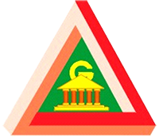
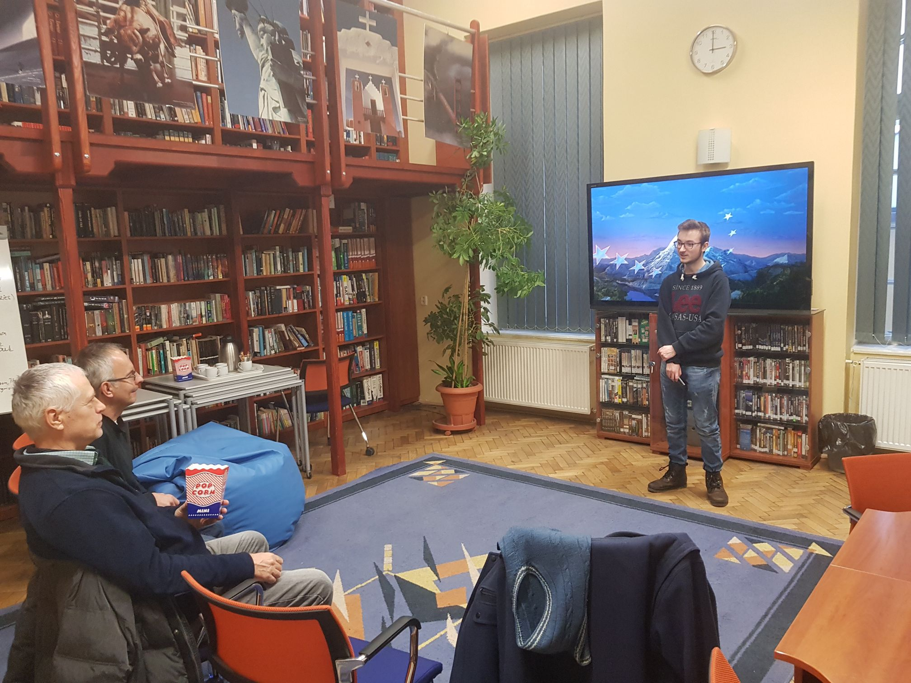

 Študoval som na základnej škole a momentálne sa vzdelávam na Gymnáziu Alejová 1 v Košiciach v triede zameranej na matematiku a informatiku, kde som sa počas zatiaľ siedmych rokov štúdia zdokonaľoval v komunikačných zručnostiach a schopnostiach prezentovať svoju prácu. Moje budúce zameranie bude na počítačové vedy, čo bude aj mojím hlavným predmetom štúdia na vysokej škole.
 Veľmi rád pracujem s ľuďmi a to v oblastiach doučovania a koučingu, ako aj počas tímovej spolupráce. Plynule hovorím, píšem a čítam po anglicky na pokročilej úrovni. Taktiež ovládam aj španielsky a ruský jazyk na stredne pokročilej úrovni. Moje IT zručnosti sú na profesionálnej úrovni v oblastiach bežného používania a manipulácie s počítačovými prvkami softvéru aj hardvéru až po komplexné riešenia problémov a programovanie vo viacerých jazykoch. Pracujem s kancelárskymi programami MS Office a grafickými programami od Adobe na užívateľskej úrovni, som mierne pokročilí v používaní front-end web jazykov ako HTML, CSS, Javascript, začiatočník v back-end jazykoch ako PHP a tiež v manipulácií databáz MySQL, avšak som otvorený novým možnostiam ďalšieho a hlbšieho vzdelávania sa.
Mojím hlavným štýlom výkonnosti je plánovač (viď.). Problémy riešim systematicky. Začínam všeobecným pohľadom na vec, ktorý potom ďalej rozvíjam a rozpracovávam do najmenších detailov, ktoré si väčšina ľudí ani nepovšimne. Milujem inovatívne riešenia, ale nepohrdnem ani zaužívanými a overeními spôsobmi.
Silné stránky:- Trpezlivosť
- Kreatívnosť
- Výkonnosť
- Cieľavedomosť
- Ambicióznosť
- Pomalšie tempo ale zato kvalitnejšia práca
- Najlepšie výsledky dosahujem pri samostatnej práci, ale viem sa prispôsobiť aj práci v tíme